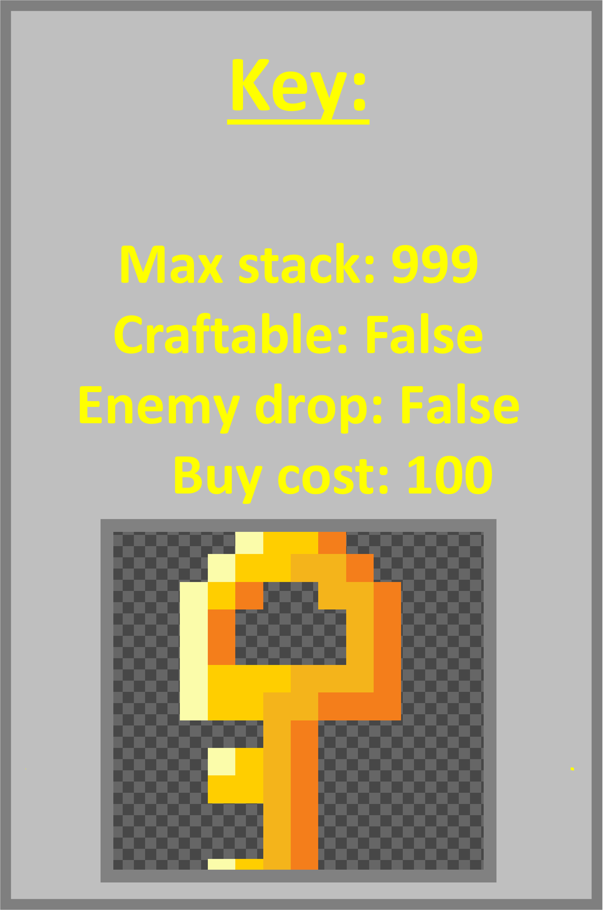
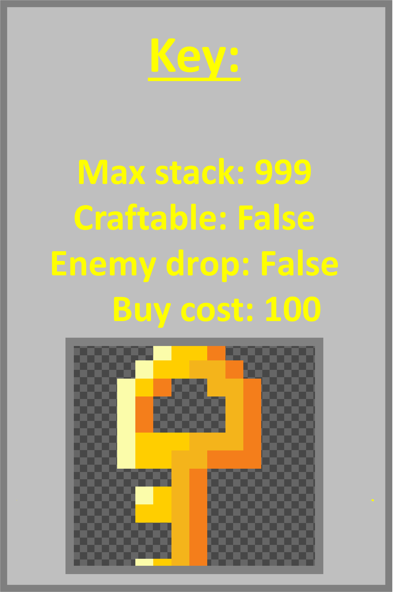

Key
The key is am item that can be obtained by completing 'the dungeon quest'. It can also ne obtained from the a chest located in the west cliffs biome. You can also craft the key with a gold bar.The key can be used to unlock the dungeon and area. Everytime you enter the dungeon a key will be consumed.
Home PlayWiki Rules Credits Discord Youtube